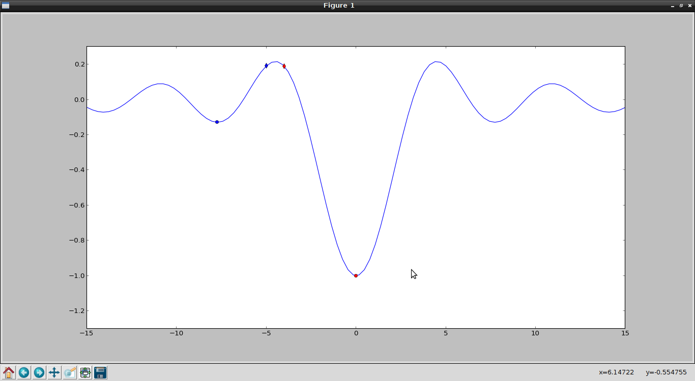

Encontrar el mínimo de una función usando fmin de scipy
Posted on lun 18 febrero 2013 in Tutorial Python • 2 min read
Este artículo muestra como se encuentra el valor mínimo de una función con la función fmin de scipy.
El artículo es una versión en Español del artículo en Inglés "How to find the minimum of a function using fmin from scipy".
El código se muestra a continuación:
#!/usr/bin/env python
#Importar numpy,pylab y la función fmin de scipy.optimize.
import numpy
import pylab
from scipy.optimize import fmin
# Se define la funcion a partir de lambda.
rsinc = lambda x: -1 * numpy.sin(x)/x
#Se define un valor x0 de -5.
x0 = -5
#Se calcula el valor minimo de la funcion en el punto x0
xmin0 = fmin(rsinc,x0)
#Se define el punto x1 con valor -4
x1 = -4
#Se calcula el valor minimo de la funcion en el punto x1
xmin1 = fmin(rsinc,x1)
# se grafica la funcion.
x = numpy.linspace(-15,15,100)
y = rsinc(x)
pylab.plot(x,y)
#Se define el punto x0 en la grafica de la funcion
pylab.plot(x0,rsinc(x0),'bd',xmin0,rsinc(xmin0),'bo')
#Se define el punto x1 en la grafica de la funcion
pylab.plot(x1,rsinc(x1),'rd',xmin1,rsinc(xmin1),'ro')
pylab.axis([-15,15,-1.3,0.3])
pylab.show()
La figura a continuación muestra la gráfica de la función:

El punto azul es el mínimo encontrado al inicio desde diamante azul (x= -5), el punto rojo es el mínimo encontrado iniciando desde diamante rojo. Este punto es el mínimo global encontrado en la función.
Además de la gráfica se genera la siguiente salida que genera la función fmin:
Optimization terminated successfully.
Current function value: -0.128375
Iterations: 18
Function evaluations: 36
Optimization terminated successfully.
Current function value: -1.000000
Iterations: 19
Function evaluations: 38
¡Haz tu donativo! Si te gustó el artículo puedes realizar un donativo con Bitcoin (BTC) usando la billetera digital de tu preferencia a la siguiente dirección: 17MtNybhdkA9GV3UNS6BTwPcuhjXoPrSzV
O Escaneando el código QR desde la billetera: